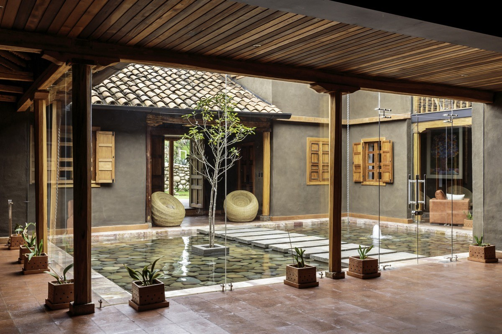

Discover the tranquility of Nalukett Courtyard Home.
A perfect blend of modern comfort and traditional charm.
are traditional residential buildings in Kerala, a south western costal state in India
.

Discover the tranquility of Nalukett Courtyard Home.
A perfect blend of modern comfort and traditional charm.
Vaisakh Divakaran Shyla
301418836
CSM733- Sustainable practices
Prof. Mohammad Ashouri
27 October 2024